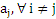
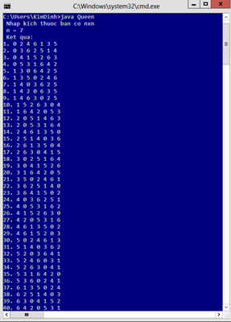

Dùng thuật toán quay lui giải
Bài toán xếp quân hậu
Kim Đình Sơn, MSSV 20102089, CNTT 4, K55
Báo cáo Projec1, ngành Khoa học máy tính,
viện Công nghệ thông tin và truyền thông, Đại học Bách Khoa Hà Nội
1. Giới thiệu
Bài toán gốc xuất phát từ bài toán 8 quân xe, được phát biểu như sau: Sắp xếp 8 quân hậu trên bàn cờ 8 x 8 sao cho không quân nào ăn nhau. Bài toán xếp hậu mở rộng cho bài toán n quân xe và bàn cờ kích thước n x n: Liệt kê tất cả các cách xếp n quân hậu trên bàn cờ n x n sao cho không quân nào ăn quân nào.
Với mỗi n, bài toán có nhiều lời giải,
|
|
Fig 1. 2 lời giải với trường hợp n=8
“Sinh đôi” với bài toán xếp hậu là bài toán về sắp xếp quân xe, nói cách khác có hẳn lý thuyết về đa thức xe trong toán học. Tuy nhiên, lời giải cho hai bài toán là hoàn toàn khác nhau vì đường đi của quân hậu bao gồm cả hai đường chéo chứa nó. Ngoài ra, không phải trường hợp nào bài toán xếp hậu cũng có lời giải, ví dụ n=2, 3, dễ thấy bài toán vô nghiệm.
2. Giải thuật quay lui
Đánh số các dòng của bàn cờ từ 1 đến n( từ trên xuống dưới). Một cách xếp hậu thỏa mãn là cách xếp hậu ở mỗi dòng ở cột nào để không ăn lẫn nhau. Điều này tương đương với việc chọn 1 hoán vị () từ tập (1,2,…,n) là số thự tự các cột( từ trái sang phải), là vị trí cột của quân hậu ở dòng i. Điều kiện để hoán vị này thỏa mãn là (1) ≠ và(2) . (1) tương đương với điều kiện không có hai quân hậu nào cùng cột (vì bản thân chúng đã không cùng hàng nên ta không cần quan tâm đến điều này). (2) tương đương với điều kiện không có hai quân nào cùng đường chéo, vì ta thấy rằng nếu quân hậu ở hàng i và quân hậu ở hàng j cùng thuộc một đường chéo thì đường thẳng này có dạng: x+y=constant hoặc x-y=constant với x là tọa độ hàng, y là tọa độ cột, nói cách khác .
Dưới đây là giải thuật rút gọn cho lời giải bài toán, mảng arr[n] là mảng vị trí cột
Thủ tục nhận biết ứng cử viên cho cách xếp hậu ở (cột j, hàng k) (cách xếp thỏa mãn yêu cầu)
boolean ungCuVien(int j, int k)
1. for int i=0 to k do
//Kiem tra dieu kien (1) va (2)
2. if j=arr[i] hoac |j-arr[i]|=|k-i| then
3. return true;
4. end if
5. end for
6. return false;
Thủ tục quay lui,
void Try(int i)
1. for int j=0 to n do
2. if !ungCuVien(j,i) then
3. arr[i]=j;
4. if i=n-1 then
5. dua ra 1 nghiem bai toan
6. else Try (i+1)
7. end if
8. end if
9. end for
Mặc dù thuật toán được rút gọn, nhưng nhược điểm là không xác định được chính xác vị trí các ứng cử viên cho lời giải, mà ta chỉ đưa ra được kết quả của toàn bộ lời giải sau khi kết thúc thủ tục. Để khắc phục điều này, ta cần thêm hai mảng phụ kiểu boolean b[ ] và c[ ] để lưu lại vị trí ứng cử viên. Ở đây mảng b[ ] dùng để ghi nhận tập đường chéo thứ nhất có phương trình x+y=constant và c[ ] để ghi nhận tập đường chéo thứ 2 có phương trình x-y=constant. Khi đó, các phần tử của mảng b[ ] xác định từ 2≤ i+j ≤ 2n. và mảng c[ ] xác định từ 1-n≤ i-j ≤ n-1. ( chú ý, vì không có vị trí âm nên ta xét vị trí mảng c[ ] theo modulo n, tức là các phần tử của c tính từ 1 đến 2n-1). Khởi tạo tất cả các mảng có giá trị là true. Ngoài ra, ta xác định thêm mảng phụ kiểu boolean a[ ] để kiểm tra cột,
void Try(int i)
1. for int j=0 to n do
//kiem tra o co thoa man ba dieu kien
2. if a[j ]=true, b[i+j]=true, c[n+i-j]=true then
3. //Nhan cot j
arr[i ]=j;
4. a[j ]=false; b[i+j]=false; c[n+i-j]=false;//Cap nhat lai ung cu vien
5. if i=n then
6. Xuat ket qua nghiem
7. else Try(i+1)
8. //Tra lai trang thai cu
a[j ]=true; b[i+j]=true; c[n+i-j]=true
9. end if
10. end for
Kiểm tra chương trình, Với n=7, ta có kết quả 40 nghiệm

Fig 2. Trường hợp n=7
Dưới đây là bảng thống kê kết quả số nghiệm bài toán ứng với mỗi giá trị n
|
n |
4 |
5 |
7 |
8 |
9 |
10 |
11 |
12 |
13 |
14 |
15 |
|
H(n) |
2 |
0 |
40 |
92 |
352 |
724 |
2680 |
14200 |
73712 |
365596 |
2279184 |
4. Tham khảo
|
[1] |
PGS TS Nguyễn Đức Nghĩa, Bài giảng Cấu trúc dữ liệu và giải thuật, NXB Đại học Bách Khoa Hà Nội, 2008, 274 trang
|
|
[2] |
Nguyễn Đức Nghĩa, Nguyễn Tô Thành, Toán rời rạc, NXB Đại học Quốc Gia Hà Nội, 2009, tải bản lần 8, 290 trang
|
{kind=link}
{kind=link}
{kind=link}
{kind=link}
{kind=link}
{kind=link}